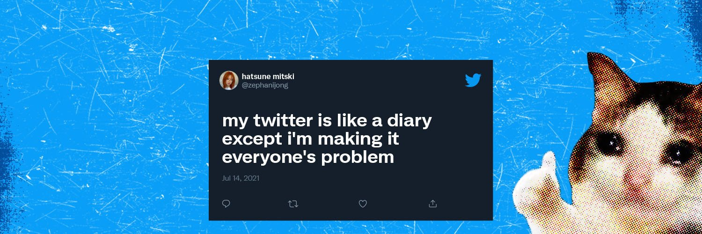
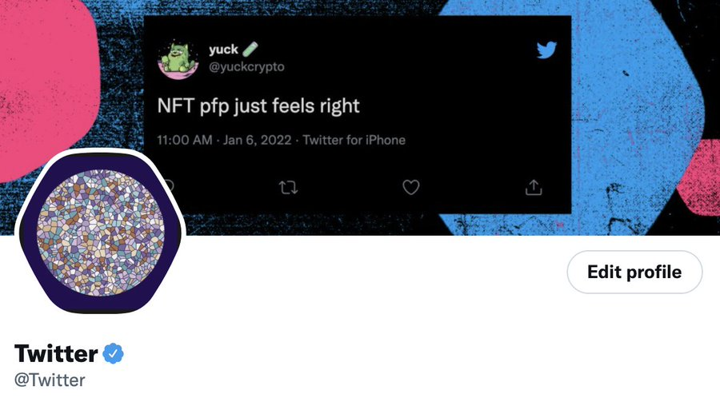
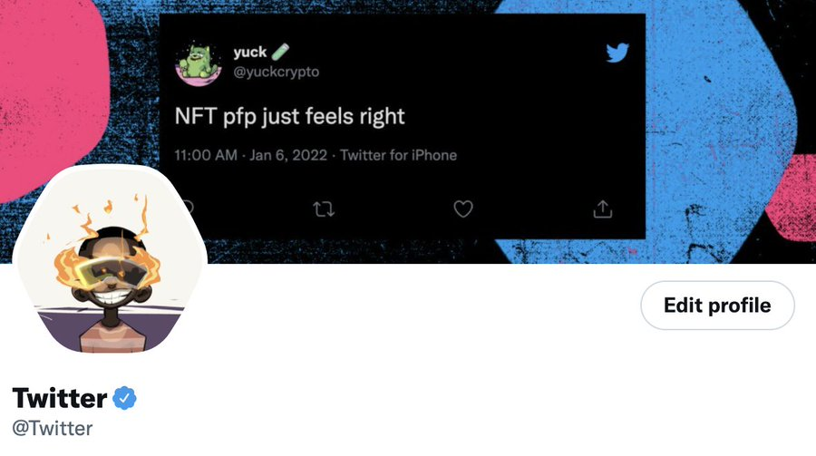
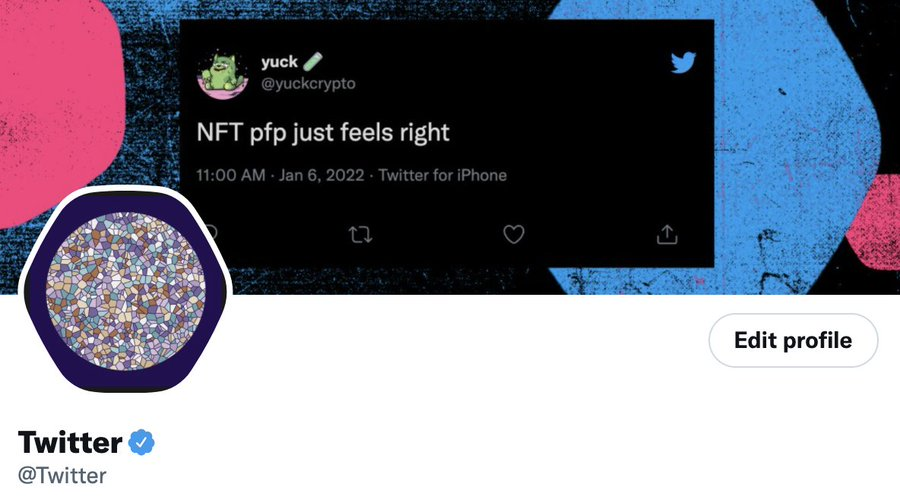
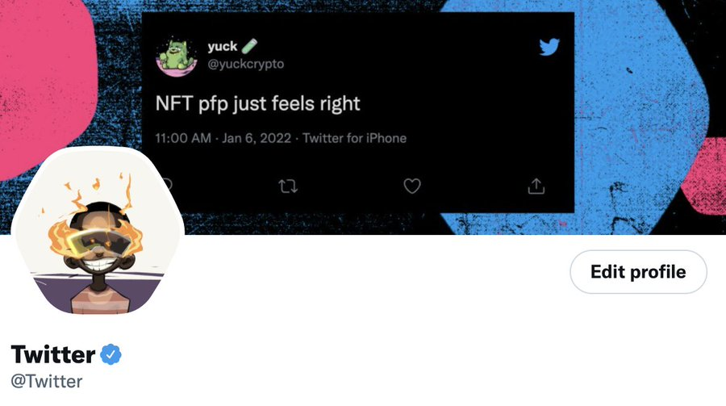

Twitter
@Twitter
What's happening?!
Joined February 2007
5 Following
61M Followers
...
@Twitter · Feb 18
Twitter Support
@TwitterSupport · Feb 17
Keep your face DM convos easily accessible by pinning them!
You can now pin up to six conversations that will stay at the top of your DM inbox.
Available on Android, iOS, and web.
GIF
...
@Twitter · Feb 17
we asked the engineers if we could pin a DM and they said NO! YOU CAN PIN SIX!
Show this thread
...
@Twitter · Feb 16
laughing but crying
...
@Twitter · Feb 14
this Tweet is our Super Bowl commercial
 


